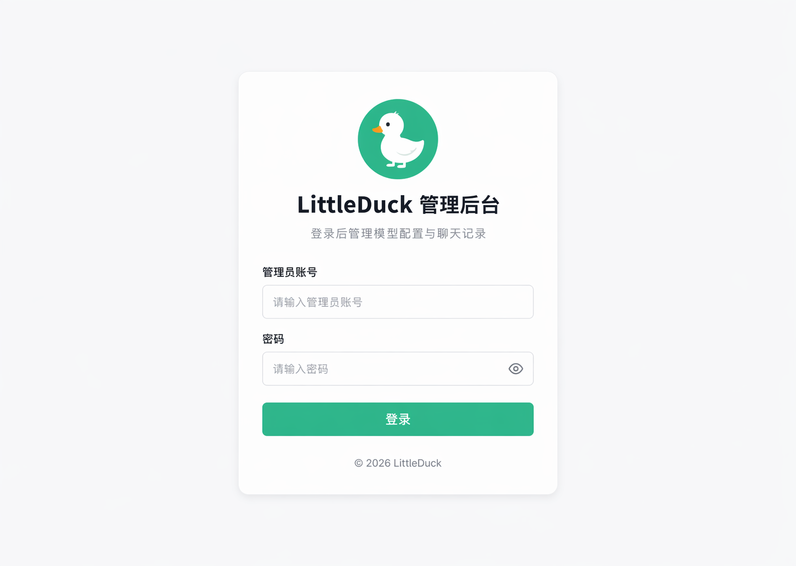
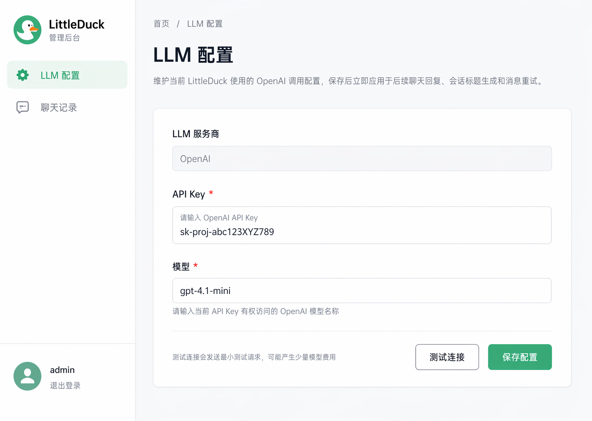
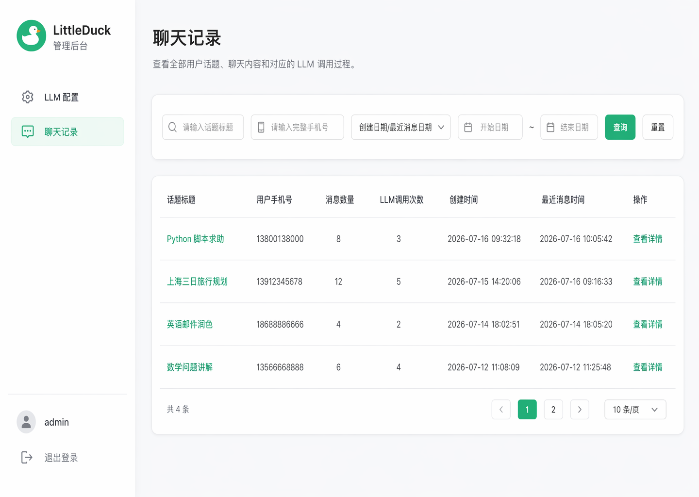
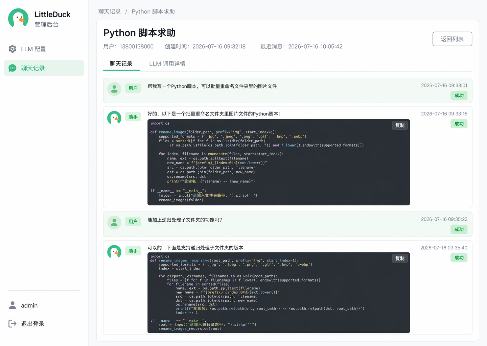
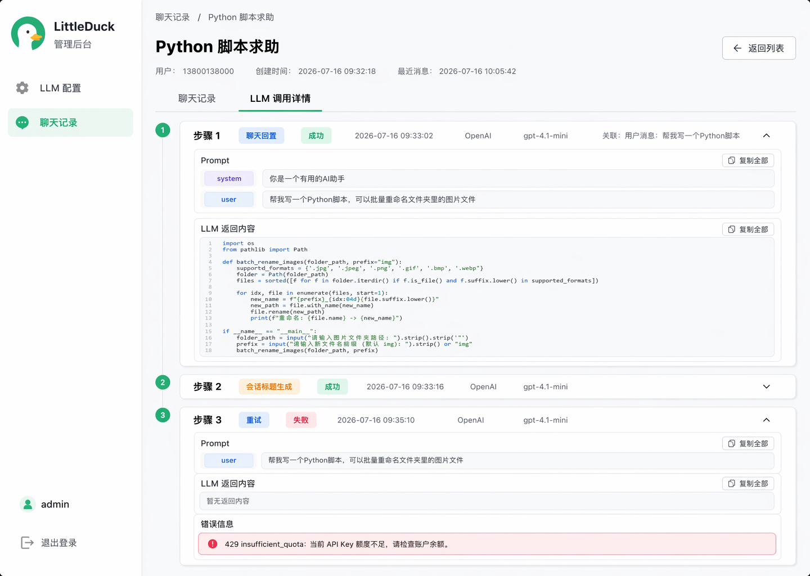
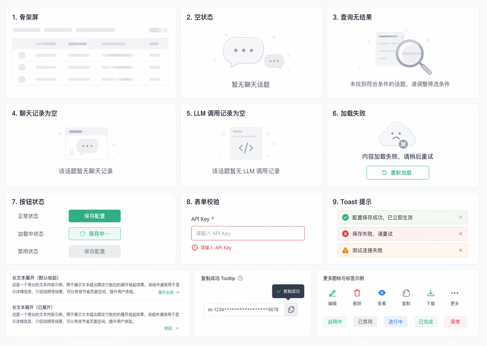

A1 · 正式输入

管理员登录
浅灰背景、居中白卡、正式鸭子 Logo、品牌标题、双字段、眼睛图标和页脚。
WI-002 revision 6 · 以 6 张正式稿为主基准，按 PRD V1.7 做必要范围纠偏。
页面框架、Logo、颜色、字号、间距、控件与信息层级直接继承；黄色说明为 PRD 取舍。

浅灰背景、居中白卡、正式鸭子 Logo、品牌标题、双字段、眼睛图标和页脚。

API Key 区已覆盖为完整明文假值；不采用掩码、显隐切换或类似真实格式的示例。

保留筛选/表格/分页结构；默认从稿中 10 条/页纠偏为 PRD 要求的每页 20 条。

继承全宽记录行、角色/时间/状态、代码块与复制，补失败、停止和重试多记录。

角色行数据驱动：不存在 System Prompt 时不显示 system 行；不展示原始请求体。

采用骨架、空态、失败、校验、Toast、折叠和复制；排除编辑、删除、下载、更多与 API Key 掩码样例。
在正式页面框架内补齐登录错误、配置测试失败、20 条分页、消息状态与真实 Prompt。
保留页头、筛选与表头，局部加载不引起整页跳动。
暂无聊天话题
未找到符合条件的话题，请调整筛选条件
该话题暂无聊天记录
该话题暂无 LLM 调用记录
保留筛选值、元信息和已成功数据。